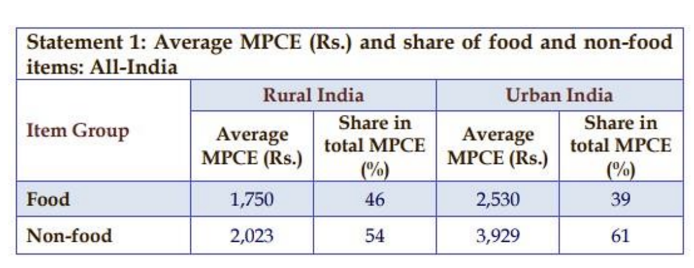

Household Consumption Expenditure Survey
Disclaimer: The views and the opinion expressed in this article are those of the author and does not necessarily reflect the views and positions of Public Policy and Governance Society IIT Kharagpur.
Relevance
The government has recently released the data from the All-India Household Consumption Expenditure Survey, marking the first such release in approximately 11 years. Conducted between August 2022 and July 2023, this survey provides valuable insights into household spending habits nationwide. The data unveiled in this survey is expected to play a crucial role in evaluating key economic indicators such as Gross Domestic Product (GDP), poverty rates, and Consumer Price Inflation (CPI). By delving into household consumption patterns, policymakers can gain a deeper understanding of consumer behavior, facilitating the formulation of targeted policy measures to tackle economic challenges. As per the press release by National Sample Survey Office (NSSO), Ministry of Statistics and Programme Implementation on 24th February, “This survey on household consumption expenditure aims at generating estimates of household Monthly Per Capita Consumption Expenditure (MPCE) and its distribution separately for the rural and urban sectors of the country, for States and Union Territories, and for different socio-economic groups.”
Background
The Consumer Expenditure Survey (CES), traditionally conducted every five years by the National Statistical Office (NSO) under the Ministry of Statistics and Programme Implementation, had its last iteration in the 68th round from July 2011 to June 2012. However, the findings of the subsequent survey conducted in 2017– 18 were discarded by the government due to concerns about data quality issues. In November 2019, the Ministry of Statistics and Programme Implementation announced its intention to explore the feasibility of conducting the next survey in 2020–2021 and 2021–22, incorporating recommended data quality refinements. An expert panel was tasked with vetting the discrepancies in the 2017–18 results and suggesting necessary changes. Unfortunately, the survey could not be launched in the past two years due to the global pandemic.Key concepts
Household consumer expenditure refers to the expenses incurred by a household on domestic consumption during a specified reference period. It excludes expenditure towards productive enterprises, residential land and building purchases, interest payments, insurance premiums, fines, penalties, and gambling expenses. Additionally, remittances, charity, and gifts are not considered consumer expenditure. However, self-consumed produce from own farms or household enterprises is included. Goods and services received as payment in kind or free from employers, such as accommodation and medical care, are also considered. For articles of food, tobacco, and fuel & light, household consumption is measured by the quantity actually used, regardless of expenditure method. For other items, household consumption is evaluated based on the expenditure during the reference period, irrespective of usage time. However, for certain expenditures like rent and telephone charges, the monthly amount is recorded.
At the household level, the NSS concept of Monthly Per Capita Consumption Expenditure (MPCE) is defined as the household's monthly consumption expenditure divided by its size. This measure serves as an indicator of the household's level of living, reflecting the average expenditure per person within the household. Subsequently, each individual's MPCE is determined as the MPCE of the household to which the person belongs. This assigns a specific number to each individual, representing their respective level of living within their household. By analyzing the distribution of individuals based on their MPCE (i.e., their household MPCE), a comprehensive picture of the population classified by economic level can be constructed.
Key Findings
The survey encompasses the entirety of the Indian Union, with only a handful of villages in the Andaman and Nicobar Islands being inaccessible. Data collection for the survey has been conducted across 8,723 villages and 6,115 urban blocks spanning the entire nation. This effort covers a total of 261,746 households, including 155,014 in rural areas and 106,732 in urban areas.
- In 2022-23, the average estimated Monthly Per Capita Consumption
Expenditure (MPCE) was Rs. 3,773 in rural India and Rs. 6,459 in urban
India. The distribution of total MPCE between food and non-food items is
provided below:

Data from the HCES, conducted by the NSSO, indicates a decline in the share of food in the average monthly per capita consumption expenditure (MPCE). In rural India, this share dropped to 46.4% in 2022-23 from 52.9% in 2011-12, 53.1% in 2004-05, and 59.4% in 1999-2000. A similar trend was observed in urban India, with the share decreasing from 48.1% in 1999-2000 to 39.2% in 2022-23. As incomes rise, households are spending relatively less on food, with notable shifts in expenditure patterns. There are five keys points:- Reduction in the share of cereals and pulses expenditure, both in rural and urban areas.
- Increase in spending on milk, surpassing expenditure on cereals and pulses combined in 2022-23.
- Shift towards higher spending on fruits and vegetables, overtaking expenditure on food grains for the first time in 2022-23. Spending on vegetables alone now exceeds that on cereals, and similarly for fruits compared to pulses.
- Growing expenditure on eggs, fish, and meat, indicating a preference for animal proteins over plant proteins.
- Increased spending on processed foods, beverages, and purchased cooked meals as a percentage of total expenditure
-
Among the states, MPCE is the highest in Sikkim for both rural and urban areas (Rural – Rs. 7,731 and Urban – Rs. 12,105). It is the lowest in Chhattisgarh (Rural – Rs. 2,466 and Urban – Rs. 4,483).
- The rural-urban difference in average MPCE, among the states is the highest in Meghalaya (83%) followed by Chhattisgarh (82%).
- Among the UTs, MPCE is the highest in Chandigarh (Rural – Rs. 7,467 and Urban – Rs. 12,575), whereas, it is the lowest in Ladakh (Rs. 4,035) and Lakshadweep (Rs. 5,475) for rural and urban areas respectively.
Issues
As per a few newspaper reports and opinions by C Rangarajani (former chairman, Economic Advisory Council to the Prime Minister and former governor, Reserve Bank of India) and S Mahendra Dev (former chairman, Commission for Agricultural Costs and Prices, GOI and former vice chancellor, IGIDR, Mumbai), there are three major issues with the report:
- The data on consumption expenditure in 2022-23 is not directly comparable to earlier surveys. Comparable data might have likely resulted in much higher poverty figures, especially for urban areas, under other methodologies. These estimates are tentative, and a more comprehensive analysis can be conducted once the unit-level data is released.
- The second issue pertains to the significant disparity between the aggregate private consumption expenditure reported by the NSSO and the figures provided by the National Accounts Statistics (NAS). Despite substantial methodological changes aimed at capturing private expenditure more accurately, the NSS share increased only marginally in 2022-23. Such discrepancies between the NSS and NAS estimates of consumption expenditure are not unique to India; however, what is particularly perplexing is that the disparity in India between NSS and NAS consumption is widening over time.
- The third issue revolves around the implications of the Household Consumption Expenditure Survey (HCES) for the Consumer Price Index (CPI). Recent data reveal shifts in consumption patterns between 2011-12 and 2022-23. In rural areas, the share of food expenditure in monthly per capita consumption expenditure (MPCE) has declined by 6.5 percentage points over 11 years, while in urban areas, it has decreased by 3.5 percentage points during the same period. The share of cereals in average MPCE has notably dropped in both rural and urban areas, while the shares of fruits, beverages, and processed foods have risen. Additionally, there have been increases in the shares of non-food items such as toiletries, household items, transportation, and durable goods, indicating changes in consumer preferences and spending behavior that may impact the composition of the CPI.
Conclusion
The release of the survey findings, albeit limited, is a positive development. To effectively inform policymaking and well-being analysis, it should be followed by a prompt release of the full price and quantity unit-level data for 2022-23, as well as from the follow-up survey for 2023-24.
As the economy diversifies and grows, changes in consumption habits are natural, and our surveys must adapt to capture these shifts. However, it's essential to minimize changes in survey instruments to accurately measure change, as the saying goes. Achieving this balance is not impossible, as evidenced by long-standing longitudinal panel surveys in other countries. While the Household Consumption Expenditure Survey (HCES) has introduced welcome changes in survey design, there was a missed opportunity to establish continuity with previous rounds.